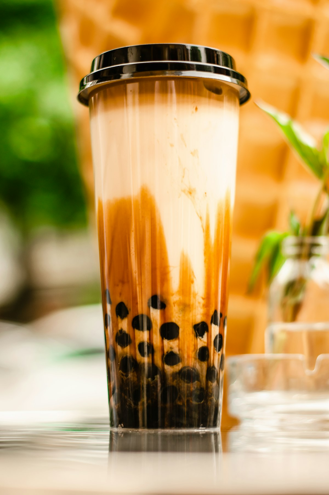

Loose-Leaf Brewed Teas
Steeped in small batches every morning using premium roasted oolong, jasmine green, and Ceylon black tea leaves. Fully customizable sweetness from 0% to 100%.
View Drink Menu →Welcome to Central Tea House, East Charlotte’s independent destination for in-house brewed loose-leaf milk teas, authentic Vietnamese slow-drip iced coffee, freshly griddled banh mi baguettes, and savory patê sô pastries since March 2019.

We reject instant powders and shortcuts in favor of authentic whole-leaf steeping and scratch Vietnamese kitchen preparation.
Steeped in small batches every morning using premium roasted oolong, jasmine green, and Ceylon black tea leaves. Fully customizable sweetness from 0% to 100%.
View Drink Menu →Oven-warmed French-Vietnamese baguettes loaded with house pâté, mayo, pickled daikon and carrot, cucumbers, cilantro, jalapeños, and savory grilled proteins.
Explore Food Menu →Warm flaky French-Vietnamese puff pastry pies filled with seasoned pork, alongside traditional dark-roast Vietnamese iced coffee dripped over sweet condensed milk.
Our Craft Philosophy →A true banh mi requires a crispy, paper-thin crust and an airy crumb. Choose from savory lemongrass grilled pork, tender marinated chicken, traditional cold cut combo with chả lụa, or crispy lemongrass tofu.
Explore Banh Mi →

Quench your thirst with refreshing jasmine green teas infused with passion fruit, mango, winter melon, and lychee, or try our exotic blended smoothies featuring real jackfruit and durian.
Discover Fruit Teas →Conveniently located at 3000 Central Ave in Plaza Midwood / East Charlotte with dedicated free shopping center parking.
Hours, Directions & Contact →